pacman::p_load(
ggplot2,
ggthemes,
tidyverse,
data.table,
zoo,
ggfortify,
reshape,
MLmetrics,
plotly,
patchwork,
ggiraph
)Climate Forecast in Singapore
1. Overview
short intro here
2. Getting Started
2.1 Loading libraries
In this exercise, we will be requiring the following libraries.
2.2 Data import
For this exercise, we will be using the climate data sets from the Meteorological Service Singapore.
2.2.1 Climate data
Historical daily climate records can be downloaded directly from this page in the Meteorological Service Singapore web page.
However, there are several things to note about this data set:
There are a total of 63 weather stations in Singapore, out of which, only 18 of them keeps records of rainfall, temperature, and wind speed. The other 41 only has rainfall records. As such, we will only look at the 18 stations with all records for consistency.
The oldest data dates back to 1980, but only in a few stations. In fact, from 2009, manual observations were gradually replaced by automated meteorological instruments.
On the more technical side of things, the data can only be downloaded for 1 weather station for 1 month at a time. If we were to download the data for the last 20 years manually, it would take 20years * 12months * 18stations = 4,320 iterations of downloads by hand. To tackle this task efficiently, a script is written to download the data automatically from the url provided.
This can be done simply by using the data.table::fread function with the url. For example, the code chunk below shows 1 iteration of download for Changi weather station for the month of January in 2024.
data.table::fread("http://www.weather.gov.sg/files/dailydata/DAILYDATA_S24_202401.csv")Now, we want to write a for loop to iterate over all 18 stations. Each station is identified by a unique key value represented in the following list.
Show code
stations = c(
"paya lebar" = "06",
"tengah" = "23",
"changi" = "24",
"seletar" = "25",
"tai seng" = "43",
"jurong west" = "44",
"ang mo kio" = "109",
"clementi" = "50",
"admiralty" = "104",
"sentosa" = "60",
"pulau ubin" = "106",
"east coast parkway" = "107",
"marina barrage" = "108",
"newton" = "111",
"tuas south" = "115",
"pasir panjang" = "116",
"jurong island" = "117",
"choa chu kang south" = "121"
)We also want to iterate over the years and month number in the url. For now, we will download the last 20 years of data.
Another issue that we encountered was that some of the column names changed at certain years either due to a different spelling or symbol. There is also many white spaces in the name, which could make coding more tedious later on. As such, I opted to change all the column names to simpler short forms with underscore as the separator instead of space.
The code chunk below shows the list of old to new column names. A function is also written for the renaming task, to rename the columns as we download the data sets 1 by 1. This helps with the data.table::rbindlist used in the loop as all the column names needs to be the same as the data set before.
Show code
col_names = c(
"Station" = "Station",
"Year" = "Year",
"Month" = "Month",
"Daily Rainfall Total (mm)" = "daily_rainfall",
"Highest 30 Min Rainfall (mm)" = "highest_30m_rainfall",
"Highest 30 min Rainfall (mm)" = "highest_30m_rainfall",
"Highest 60 Min Rainfall (mm)" = "highest_60m_rainfall",
"Highest 60 min Rainfall (mm)" = "highest_60m_rainfall",
"Highest 120 Min Rainfall (mm)" = "highest_120m_rainfall",
"Highest 120 min Rainfall (mm)" = "highest_120m_rainfall",
"Mean Temperature (°C)" = "mean_temp",
"Mean Temperature (°C)" = "mean_temp",
"Mean Temperature (°C)" = "mean_temp",
"Maximum Temperature (°C)" = "max_temp",
"Maximum Temperature (°C)" = "max_temp",
"Maximum Temperature (°C)" = "max_temp",
"Minimum Temperature (°C)" = "min_temp",
"Minimum Temperature (°C)" = "min_temp",
"Minimum Temperature (°C)" = "min_temp",
"Mean Wind Speed (km/h)" = "mean_wind",
"Max Wind Speed (km/h)" = "max_wind"
)
clean_names <- function(df, col_names) {
for (n in names(col_names)) {
names(df)[names(df) == n] <- col_names[[n]]
}
return (df)
}Finally, we can write our loop. The full code is shown below.
Show code
pad_zero <- function(num) {
if (num < 10) {
return (paste0("0", as.character(num)))
} else {
return (as.character(num))
}
}
df <- data.table()
for (station in stations) {
for (y in 3:23) {
for (m in 1:12) {
year <- pad_zero(y)
month <- pad_zero(m)
tryCatch(
{
joining_df <- data.table::fread(paste0(
"http://www.weather.gov.sg/files/dailydata/DAILYDATA_S",
station,
"_20",
year,
month,
".csv"),
encoding = "Latin-1")
joining_df <- clean_names(joining_df, col_names)
df <- rbindlist(list(df, joining_df), use.names=TRUE, fill=TRUE)
}, error = function(e) {
print(e)
}
)
}
}
}After downloading, we save the data in a csv file with the data.table::fwrite function.
fwrite(df, "data/clean_climate_data.csv")2.2.2 Weather Station data
The coordinates of each weather station can be found here. Due to the small number, I have manually collated them in a csv file and saved it.
2.2.3 Load data
Assuming we had already saved off the data previously, we will now load the data sets using the data.table::fread function.
climate <- data.table::fread("data/clean_climate_data.csv", encoding="Latin-1") %>% as.data.frame()
Tip
We will need to use encoding = “Latin-1” here to identify some of the symbols present in the data set. Otherwise, the data set will be unreadable.
3. Preliminary EDA
In this section, we will perform some preliminary exploratory analysis to understand how our data looks like as a time series. This will help us determine whether each variable can or can not be used, or any additional wrangling that is required to be done before the time series analysis is possible.
But first, let us do some additional cleaning to prevent errors.
3.1 Remove unwanted characters
There are many observations with special symbol “—”. This is different from the usual dash “-” that we normally find on our keyboards. To avoid errors, we will change all of them to 0s.
# lapply gsub function
climate <- data.frame(lapply(climate, function(x) gsub("—", 0, x)), stringsAsFactors=F)
Tip
lapply refers to list apply. You can think of a data.frame object as a list of columns. lapply iterates through that list, and applies the function to each column one by one.
3.2 Data type
Next, we want to ensure that all columns are in their correct data type. For Station, Year, Month, and Day, we want them to be factors. The rest should be numerical.
For those values that were coerced as NA, we will convert them to 0 as well.
# Change factor data's type to factor
climate[c("Station", "Year", "Month", "Day")] <- lapply(climate[c("Station", "Year", "Month", "Day")] , factor)
# Change non-factor data to numeric
climate[!names(climate) %in% c("Station", "Year", "Month", "Day")] <- lapply(climate[!names(climate) %in% c("Station", "Year", "Month", "Day")] , as.numeric)
# NA introduced by coercion will be changed back to 0
climate[is.na(climate)] <- 03.3 Date column
We also want a date column for easier sorting in chronological order. To do that, we can use the zoo::as.Date function.
# Create date column
climate$date <- as.Date(with(climate, paste(Year, Month, Day,sep="-")), "%Y-%m-%d")
# Sort by date
climate <- climate[order(climate$date), ]3.4 Daily Mean Temperature, Rainfall, and Wind
Let us explore how the mean temperature, rainfall, and wind looks like in the past 20 years.
The code chunk below plots the daily mean temperature over the last 20 years for each weather station. Similar code was used to plot the chart for rainfall and temperature as well.
Show code
ggplot() +
geom_line(data = climate, aes(x=date, y=mean_temp, colour=Station)) +
facet_wrap(~Station) +
ggtitle("Daily Mean Temperature in last 20 years")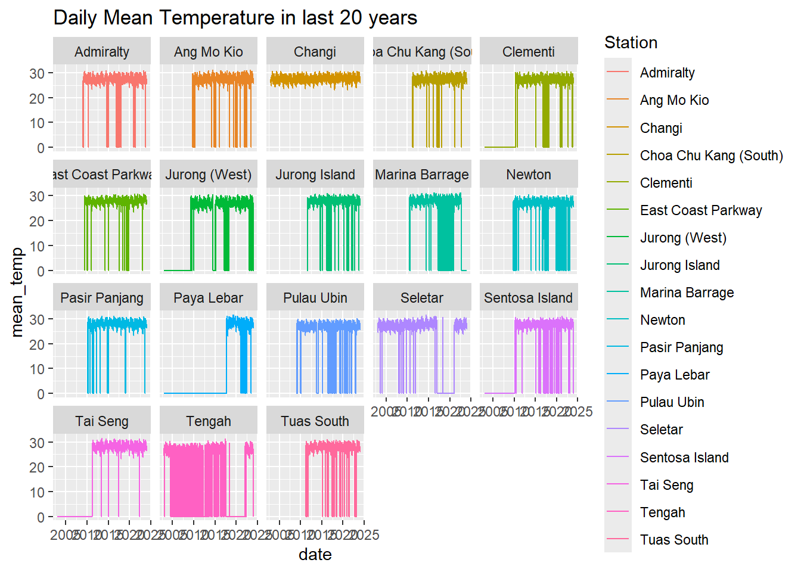
Show code
ggplot() +
geom_line(data = climate, aes(x=date, y=daily_rainfall, colour=Station)) +
facet_wrap(~Station) +
ggtitle("Daily rainfall in the last 20 years")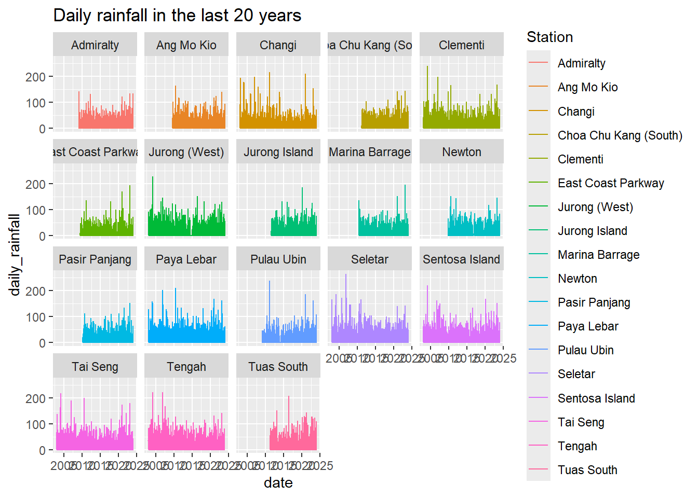
Show code
ggplot() +
geom_line(data = climate, aes(x=date, y=mean_wind, colour=Station)) +
facet_wrap(~Station) +
ggtitle("Daily mean wind speed in the last 20 years")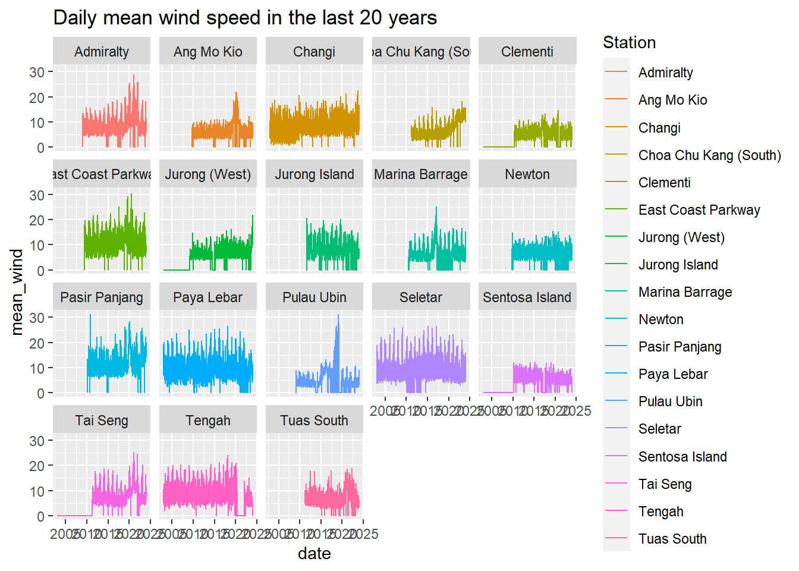
Insights
- The start date of each weather station varies. This should be taken into account when fitting the model, as well as in the date range selection in the Shiny App.
- There are many periods within the time series where the data is missing, especially so in temperature and wind. To deal with this, we can take the mean value of that month from other years as a filler value. For example, if jan 2010 is missing, we can use the mean value from jan 2003-2009, and 2011-2023 to fill the gap.
- Daily rainfall has many 0 values, representing days without rain. This however, makes it difficult to model a time series. Thus, dates will be rolled up to monthly levels and we will analyse mean monthly values instead. To be consistent, we will use monthly levels for temperature and wind data as well.
Non-Captured v.s Missing data
Non-captured data refers to the missing data before the date when the weather station started collecting that data. We do not want to modify non-captured data.
Missing data refers to the data after the start date that is captured but missing for whatever reasons. We want to fill these gaps with appropriate estimation techniques.
4. Data Wrangling
4.1 Roll up to Monthly levels
What we want to do now is to group the data by month and aggregate them using their monthly mean. However, there may be many instances of 0s (missing data) within each month which will pull down the monthly average temperature or wind. Therefore, a function is written to calculate the non-zero mean value instead. However, this is not needed for rainfall as 0s would mean days with no rain.
# Function to find non-zero mean from a dateframe column
non_zero_mean <- function(x) {
y <- mean(x[x!=0])
return (y)
}Next, we use the dplyr::group_by and dplyr::summarise functions to calculate the monthly average for all variables. We also re-create the date column as a function of year and month using zoo::as.yearmon.
# Apply non-zero means to monthly temp and wind variables
# Apply mean to monthly rain variables
monthly_climate <- climate %>%
group_by(Station, Year, Month) %>%
summarise(mean_temp = non_zero_mean(mean_temp),
max_temp = non_zero_mean(max_temp),
min_temp = non_zero_mean(min_temp),
mean_wind = non_zero_mean(mean_wind),
max_wind = non_zero_mean(max_wind),
mean_rain = mean(daily_rainfall),
mean_30m_rain = mean(highest_30m_rainfall),
mean_60m_rain = mean(highest_60m_rainfall),
mean_120m_rain = mean(highest_120m_rainfall),
date = min(date))
# Format date column as yearmon format
monthly_climate$date <- as.yearmon(monthly_climate$date)
# Change any NAs to 0
monthly_climate[is.na(monthly_climate)] <- 04.2 Filling missing data with non-zero means
At this point, we note that even after aggregating to a monthly level, there are still missing values. This is probably because the entire month of data was missing, and taking the non-zero mean of that month would result in NAs that are later converted to 0. Therefore, we will fill these months with estimated values as described below.
This task requires several steps which is performed by the code chunk below.
Iterate through all relevant temperature and wind variables.
For each variable, iterate through all the stations.
For each station, find the months where all data is missing.
Lastly, for each of these months, we replace the NA or 0 with the non-zero mean of the same month in other years for that station. For example, if Changi station jan 2010 is missing, then we will replace the value with the non-zero mean from Changi station jan 2003-2009, and 2011-2023.
Show code
# Function to replace missing data with non-zero mean
replace_zero <- function(df, s, y, m, col) {
df[df$Station == s &
df$Year == y &
df$Month == m, col][[1]] <- non_zero_mean(df[df$Station == s & df$Month == m, col])
return (df)
}
# Define temp and wind variables in list
columns = c("mean_temp", "max_temp", "min_temp", "mean_wind", "max_wind")
# Create results data frame as a copy of monthly_climate
# We will fill in the new non-zero values
filled_monthly_climate <- monthly_climate
# Loop to find missing data
for (c in columns) {
for (s in levels(monthly_climate$Station)) {
# Isolate data for station and climate variable
temp <- monthly_climate[monthly_climate$Station == s,
c("Station", "Year", "Month", "date", c)]
# Sort by date
temp <- temp[order(temp$date), ]
# Get cumulative sum to find start date
temp$cum_sum <- cumsum(temp[c])
# Loop years and months to find missing months
for (y in levels(temp$Year)) {
for (m in levels(temp$Month)) {
# Extract value and cumulative sum
value <- temp[temp$Year == y &
temp$Month == m, c][[1]]
cum_sum <- temp[temp$Year == y &
temp$Month == m, "cum_sum"][[1]]
# If value is numeric(0), next
# This usually occurs for rows with non-captured data
if (length(value) == 0) next
# If value == 0 and is after start date (cumulative sum > 0)
# Replace zero with non-zero means
if (value == 0 & cum_sum > 0) {
temp <- replace_zero(temp, s, y, m, c)
}
# If value is before start date, replace 0 with NA
# This will prevent ggplot from plotting a 0 value for
# data points before the start date
if (cum_sum == 0) {
temp[
temp$Year == y &
temp$Month == m,
c
] <- NaN
}
# Extract filled value from temp
new_value <- temp[temp$Year == y &
temp$Month == m, c][[1]]
# Assign to results data frame
filled_monthly_climate[
filled_monthly_climate$Station == s &
filled_monthly_climate$Year == y &
filled_monthly_climate$Month == m,
c
] <- new_value
}
}
}
}4.3 Final look at data
Let us chart the same variables once more and check if all values are fine now.
Show code
ggplot() +
geom_line(data = filled_monthly_climate, aes(x=date, y=mean_temp, colour=Station)) +
facet_wrap(~Station) +
ggtitle("Monthly Mean Temperature in last 20 years")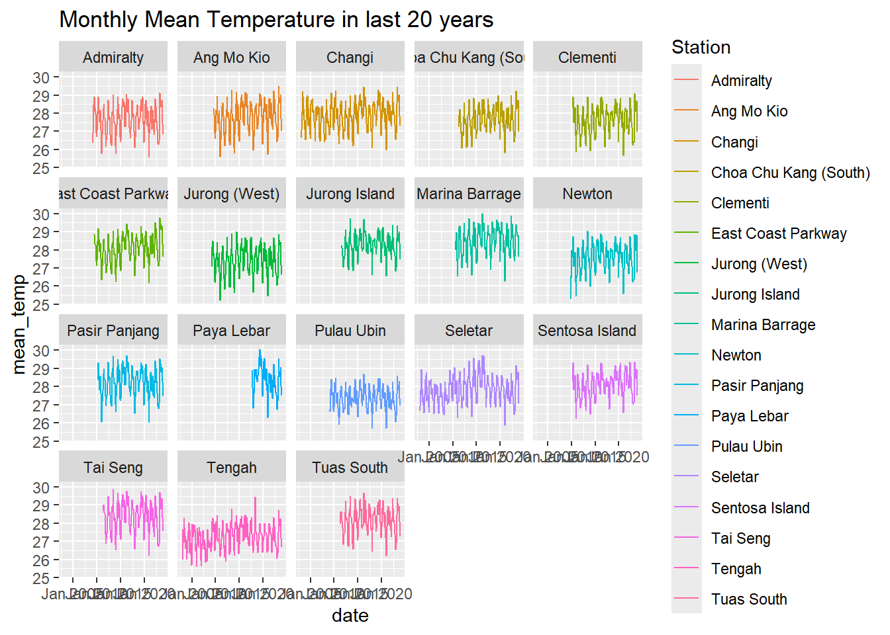
Show code
ggplot() +
geom_line(data = filled_monthly_climate, aes(x=date, y=mean_rain, colour=Station)) +
facet_wrap(~Station) +
ggtitle("Monthly rainfall in the last 20 years")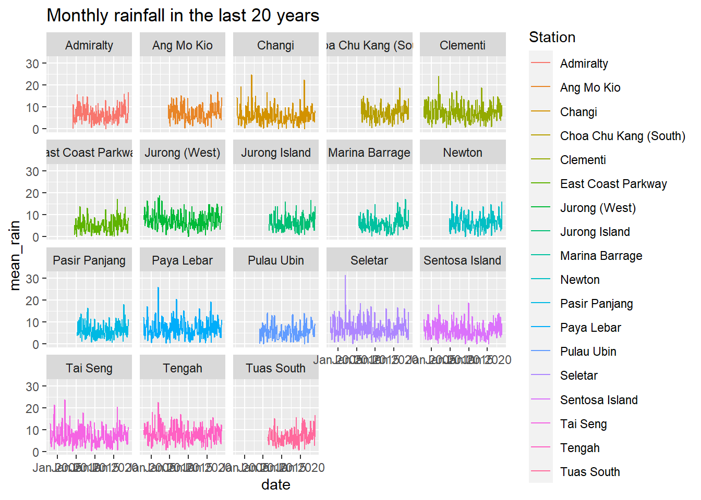
Show code
ggplot() +
geom_line(data = filled_monthly_climate, aes(x=date, y=mean_wind, colour=Station)) +
facet_wrap(~Station) +
ggtitle("Monthly mean wind speed in the last 20 years")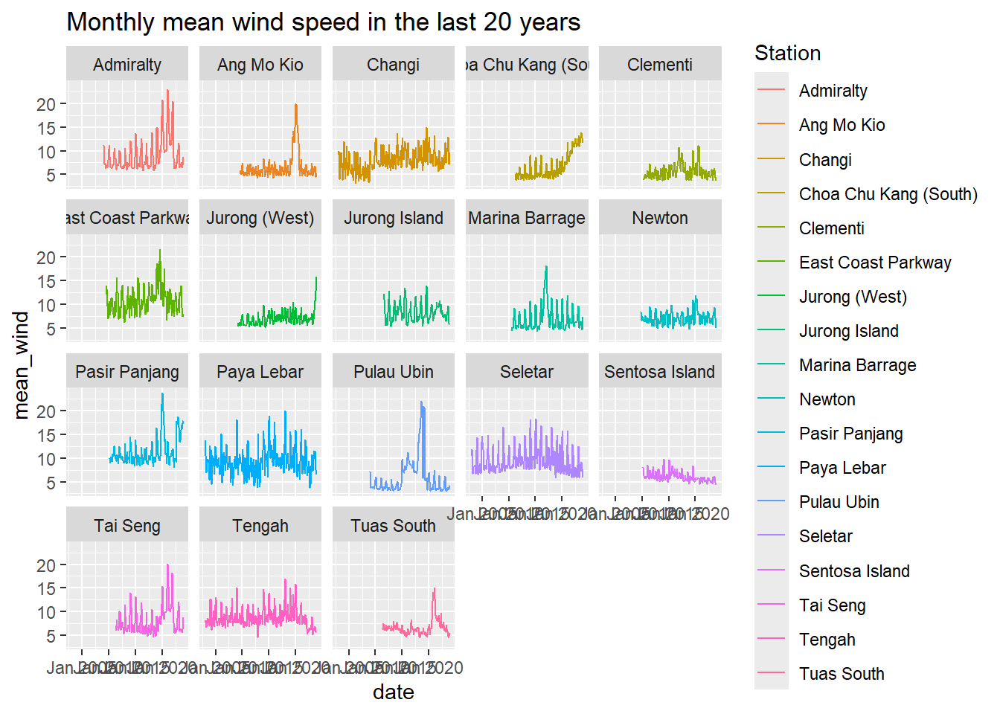
5. Time Series Forecasting
In this section, we will be using time series econometric models to forecast future climate conditions in Singapore.
5.1 Model Initialization
This section describes the model initialization.
Firstly, user selects weather station and climate variable using drop-down list.
# User Input
target_station <- "Paya Lebar"
target_variable <- "mean_temp"Then, the code will filter out the selected weather station and climate variable, and obtain the earliest start date available.
Show code
# Filter out target data from monthly_climate
target <- filled_monthly_climate[
filled_monthly_climate$Station == target_station,
c("Station", "Year", "Month", "date", target_variable)
]
# Convert NAs back to zero for sorting and cumsum
target[is.na(target)] <- 0
target <- target[order(target$date), ]
# Finding earliest start date using cumulative sum
target$cumulative_sum <- cumsum(target[target_variable])
target <- target[target$cumulative_sum > 0, ]
y <- dplyr::first(target[order(target$date), "Year"])[[1]] %>%
as.character() %>%
as.numeric()
m <- dplyr::first(target[order(target$date), "Month"])[[1]] %>%
as.character() %>%
as.numeric()
print(paste0("Earliest start date: ", as.character(y), "-", as.character(m)))[1] "Earliest start date: 2017-9"Next, the code will fit the Holt Winters model based on default parameters
Full time period available for the selected weather station and climate variable
Default train test split of 0.8
Default Holt Winters parameters which is automatically calculated by the model
Show code
# Default values
train_test_split <- 0.8
# Find row number when training ends and validation starts
split_train_end <- round(train_test_split*nrow(target)) - 1
split_val_start <- round(train_test_split*nrow(target))
# Check if there is no test, ie: train_test_split == 1
# if (target_date_end == target$date[split_val_start])
if (train_test_split == 1) {
validation = FALSE
split_train_end <- split_val_start
} else {
validation = TRUE
}
# Create time series object
train_ts <- ts(target[target_variable],
frequency = 12,
start = c(
y,
m
),
end = c(
as.numeric(year(target$date[split_train_end])),
as.numeric(month(target$date[split_train_end]))
))
# Fit model
HW <- HoltWinters(train_ts)
# Create results data frame
observed_df <- target[,c("date",target_variable)]
observed_df$type <- "Observed"
colnames(observed_df)[2] <- "value"
# Store results in data frame
# If there is no validation results, no need to store
if (validation) {
val_period <- nrow(target) - split_val_start + 1
validation_preds <- predict(HW,
n.ahead = val_period)
fit_df <- data.frame(
date = observed_df$date[13:(nrow(observed_df)-val_period)],
value = as.data.frame(HW$fitted)$xhat,
type = "Fitted"
)
val_df <- data.frame(
date = observed_df$date[(nrow(observed_df)-val_period+1):nrow(observed_df)],
value = as.data.frame(validation_preds)$fit,
type = "Validation"
)
results_df <- rbind.data.frame(observed_df, fit_df, val_df)
} else {
val_period <- 0
fit_df <- data.frame(
date = observed_df$date[13:(nrow(observed_df)-val_period)],
value = as.data.frame(HW$fitted)$xhat,
type = "Fitted"
)
results_df <- rbind.data.frame(observed_df, fit_df)
}
# Prepare tooltips
results_df$tt <- c(paste0(
"Date: ", results_df$date,
"\nValue: ", round(results_df$value,0),
"\nType: ", results_df$type
))Lastly, several plots and metrics will be generated from the default model
Actual vs Predicted
Show code
# Plot observed and fitted line
g <- ggplot(data = results_df,
aes(x=date,
y=value,
colour=type)) +
geom_line_interactive(
aes(data_id = date),
linewidth=0.5
) +
geom_point_interactive(
aes(data_id = date,
tooltip = tt),
size = 0
)
# Edit scales
g <- g +
scale_color_manual(values=c('Observed' = 'black',
"Fitted" = 'darkturquoise',
"Validation" = 'coral'))
# Add plot layouts
g <- g +
ggtitle("Actual vs Predicted") +
xlab("Date") +
ylab(str_to_title(gsub("_", " ", target_variable)))
girafe(
ggobj = g,
width_svg = 6,
height_svg = 6*0.618,
options = list(
opts_hover(css = "r: 2pt; stroke: white;"),
opts_hover_inv(css = "opacity:0.2;")
)) Decomposed
Show code
# Store decomposed elements in data frame
components_dfts <- decompose(train_ts)
decomp_df <- data.frame(Date = observed_df$date[1:(nrow(observed_df)-val_period)],
Observed = components_dfts$x,
Trend = components_dfts$trend,
Seasonal = components_dfts$seasonal,
Random = components_dfts$random)
# Prepare interactive plots for patchwork
d1 <- ggplot(data = decomp_df) +
geom_line(aes(x=Date, y=Observed)) +
geom_point_interactive(aes(x=Date,
y=Observed,
data_id=Date,
tooltip=paste0("Date: ", Date,
"\nObserved: ", round(Observed,1),
"\nTrend: ", round(Trend,1),
"\nSeasonal: ", round(Seasonal,1),
"\nRandom: ", round(Random,1))),
size=0.2)
d2 <- ggplot(data = decomp_df) +
geom_line(aes(x=Date, y=Trend)) +
geom_point_interactive(aes(x=Date,
y=Trend,
data_id=Date,
tooltip=paste0("Date: ", Date,
"\nObserved: ", round(Observed,1),
"\nTrend: ", round(Trend,1),
"\nSeasonal: ", round(Seasonal,1),
"\nRandom: ", round(Random,1))),
size=0.2)
d3 <- ggplot(data = decomp_df) +
geom_line(aes(x=Date, y=Seasonal)) +
geom_point_interactive(aes(x=Date,
y=Seasonal,
data_id=Date,
tooltip=paste0("Date: ", Date,
"\nObserved: ", round(Observed,1),
"\nTrend: ", round(Trend,1),
"\nSeasonal: ", round(Seasonal,1),
"\nRandom: ", round(Random,1))),
size=0.2)
d4 <- ggplot(data = decomp_df) +
geom_line(aes(x=Date, y=Random)) +
geom_point_interactive(aes(x=Date,
y=Random,
data_id=Date,
tooltip=paste0("Date: ", Date,
"\nObserved: ", round(Observed,1),
"\nTrend: ", round(Trend,1),
"\nSeasonal: ", round(Seasonal,1),
"\nRandom: ", round(Random,1))),
size=0.2)
d <- d1 / d2 / d3 / d4 +
plot_layout(axes = "collect") +
plot_annotation('Decomposition of Time Series')
girafe(code = print(d),
width_svg = 6,
height_svg = 6 * 0.618,
options = list(
opts_hover(css = "fill: red; r: 2pt; stroke: white;"),
opts_hover_inv(css = "opacity:0.2;")
) )Metrics
Show code
# Calculate training MAPE and MAE
train_MAPE <- round(MAPE(observed_df$value[13:(nrow(observed_df)-val_period)],
fit_df$value) * 100,
2)
train_MAE <- round(MAE(observed_df$value[13:(nrow(observed_df)-val_period)],
fit_df$value),
2)
# Calculate validation MAPE and MAE
val_MAPE <- round(MAPE(observed_df$value[(nrow(observed_df)-val_period+1):nrow(observed_df)],
val_df$value) * 100,
2)
val_MAE <- round(MAE(observed_df$value[(nrow(observed_df)-val_period+1):nrow(observed_df)],
val_df$val),
2)
print(paste0("Training MAPE: ", train_MAPE, "%"))[1] "Training MAPE: 1.43%"Show code
print(paste0("Training MAE: ", train_MAE))[1] "Training MAE: 0.41"Show code
print(paste0("Validation MAPE: ", val_MAPE, "%"))[1] "Validation MAPE: 2.04%"Show code
print(paste0("Validation MAE: ", val_MAE))[1] "Validation MAE: 0.57"5.2 Model Tuning
Now users can decide to change certain model parameters to tune the model. Tuning the model will re-generate all the plots and metrics with the new parameters.
# User Input
target_date_start <- "2018-3"
target_date_end <- "2023-12"
train_test_split <- 0.8 # floating value between 0.5 and 1
alpha <- HW$alpha # floating value between 0 and 1
beta <- HW$beta # floating value between 0 and 1
gamma <- HW$gamma # floating value between 0 and 1
seasonal <- "additive" # or "multiplicative"The code here is mostly the same as the one above, but now with the addition of the parameters.
Show code
# Filter out defined time period
target <- target[target$date >= target_date_start, ]
target <- target[target$date <= target_date_end, ]
# Find row number when training ends and validation starts
split_train_end <- round(train_test_split*nrow(target)) - 1
split_val_start <- round(train_test_split*nrow(target))
# Check if there is no test, ie: train_test_split == 1
# if (target_date_end == target$date[split_val_start])
if (train_test_split == 1) {
validation = FALSE
} else {
validation = TRUE
}
# Create time series object, but now with target start and end date
train_ts <- ts(target[target_variable],
frequency = 12,
start = c(
strsplit(target_date_start, "-")[[1]][1],
strsplit(target_date_start, "-")[[1]][2]
),
end = c(
as.numeric(year(target$date[split_train_end])),
as.numeric(month(target$date[split_train_end]))
))
# Fit model
HW <- HoltWinters(train_ts,
alpha = alpha,
beta = beta,
gamma = gamma,
seasonal = seasonal)
# Create results data frame
result_df <- target[,c("date",target_variable)]
# Store results in data frame
# If there is no validation results, no need to store
if (validation) {
val_period <- nrow(target) - split_val_start
validation_preds <- predict(HW,
n.ahead = val_period)
result_df$fit <- NA
result_df$fit[13:(nrow(result_df)-val_period)] <- as.data.frame(HW$fitted)$xhat
result_df$val <- NA
result_df$val[(nrow(result_df)-val_period+1):nrow(result_df)] <- validation_preds
} else {
result_df$fit <- NA
result_df$fit[13:nrow(result_df)] <- as.data.frame(HW$fitted)$xhat
}After which, the same plots and metrics will be generated from the tuned model which is shown above.
5.3 Model Forecast
Lastly, once parameters are confirmed, we can proceed to make predictions and plot them.
# User Input
n.ahead = 24
CI = 0.95The code chunk below prepares the data needed for the plot.
Show code
# Referenced from
# https://www.r-bloggers.com/2012/07/holt-winters-forecast-using-ggplot2/
# Create target time series object without validation
target_ts <- ts(target[target_variable],
frequency = 12,
start = c(
strsplit(target_date_start, "-")[[1]][1],
strsplit(target_date_start, "-")[[1]][2]
),
end = c(
strsplit(target_date_end, "-")[[1]][1],
strsplit(target_date_end, "-")[[1]][2]
))
# Fit Holt Winters model
HW_fc <- HoltWinters(target_ts,
alpha = alpha,
beta = beta,
gamma = gamma,
seasonal = seasonal)
# Predict
forecast <- predict(HW_fc,
n.ahead = n.ahead,
prediction.interval = T,
level = CI)
# Store results in data frame
df <- as.data.frame(forecast)
# Separate out forecasted values and confidence interval deviation
# Convert date to Y-m format
for_values <- data.frame(time = time(forecast),
value_forecast = df$fit,
dev = df$upr - df$fit)
for_values$time <- as.yearmon(round_date(date_decimal(as.numeric(for_values$time)), unit = "month"))
# Store fitted values in separate data frame
# Convert date to Y-m format
fitted_values <- data.frame(time = time(HW_fc$fitted),
fitted = as.data.frame(HW_fc$fitted)$xhat)
fitted_values$time <-as.yearmon(round_date(date_decimal(as.numeric(fitted_values$time)), unit = "month"))
# Store actual values in separate data frame
# Convert date to Y-m format
actual_values <- data.frame(time = time(HW_fc$x),
Actual = c(HW_fc$x))
actual_values$time <- as.yearmon(round_date(date_decimal(as.numeric(actual_values$time)), unit = "month"))
# Merge all 3 frames into one data frame
graphset <- merge(actual_values, fitted_values, by='time', all=TRUE)
graphset <- merge(graphset, for_values, all=TRUE, by='time')
graphset[is.na(graphset$dev), ]$dev <- 0
# Create new column combining fitted and forecast
graphset$Fitted <- c(rep(NA, NROW(graphset) - (NROW(for_values) + NROW(fitted_values))), fitted_values$fitted, for_values$value_forecast)
# Stack data frame into long format
graphset.melt <- melt(graphset[, c('time', 'Actual', 'Fitted')], id='time')
# Preparing tooltips
graphset.melt$tt <- c(paste0(
ifelse(graphset.melt$variable == "Actual", "Actual: ", "Fitted: "),
round(graphset.melt$value,2)
))Now we can plot the forecast values with confidence interval.
Show code
# Plot interactive
f <- ggplot(graphset.melt,
aes(x=time, y=value)) +
geom_ribbon(data=graphset,
aes(x=time,
y=Fitted,
ymin=Fitted-dev,
ymax=Fitted + dev),
alpha=.2,
fill='green') +
geom_line_interactive(aes(colour=variable,
data_id=variable),
linewidth=1) +
geom_point_interactive(aes(colour=variable,
data_id=variable,
tooltip=tt),
size = 0.3) +
geom_vline(xintercept=max(actual_values$time),
lty=2) +
xlab('Date') +
ylab(str_to_title(gsub("_", " ", target_variable))) +
ggtitle(paste0("Holt Winter's Forecast for ",
str_to_title(gsub("_", " ", target_variable)))) +
theme(legend.position='bottom') +
scale_colour_hue('')
girafe(code = print(f),
width_svg = 6,
height_svg = 6 * 0.618,
options = list(
opts_hover(css = "color: none;"),
opts_hover_inv(css = "opacity:0.2;")
))6. Storyboard UI
This section describes the UI design and the intended work flow for users.
6.1 Model initialization
The user starts by selecting the weather station and climate variable of interest. These are selected from a pre-defined drop down list.
Once initialized, a Holt Winters model is fitted based on selected weather station, climate variable, and other default parameters.
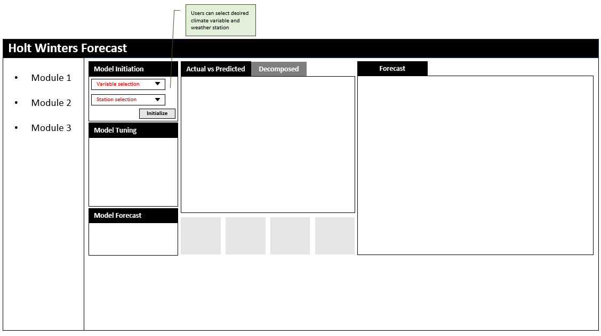
6.2 Model Tuning
After the step in 6.1, several panels will be populated.
Model tuning panel
Model forecast panel
Actual vs Predicted plot
Decomposed plot
Model Metric boxes
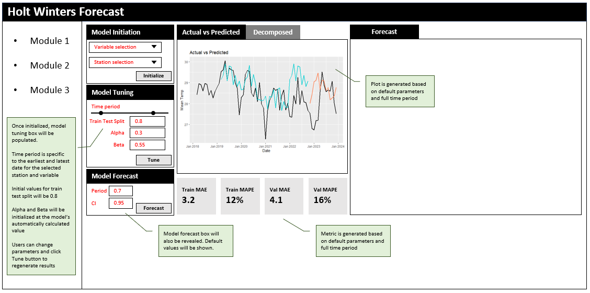
6.2.1 Model parameters
The model parameters consists of time period, train test split percentage, as well as other Holt Winters parameters.
The time period is selected using a slider. The start and end date of the slider is specific to the weather station and climate variable chosen earlier.
The train test split is a floating number between 0.5 and 1.
The Holt Winters parameters will be initially populated with the value that was calculated by the model.
Users can change these values as they like, and click the Tune button to re-generate the results.
6.2.2 Plots
There are 2 plots that will be generated, namely Actual vs Predicted and Decomposed plots. Decomposed plot will be revealed when the user switches to the Decomposed tab above.
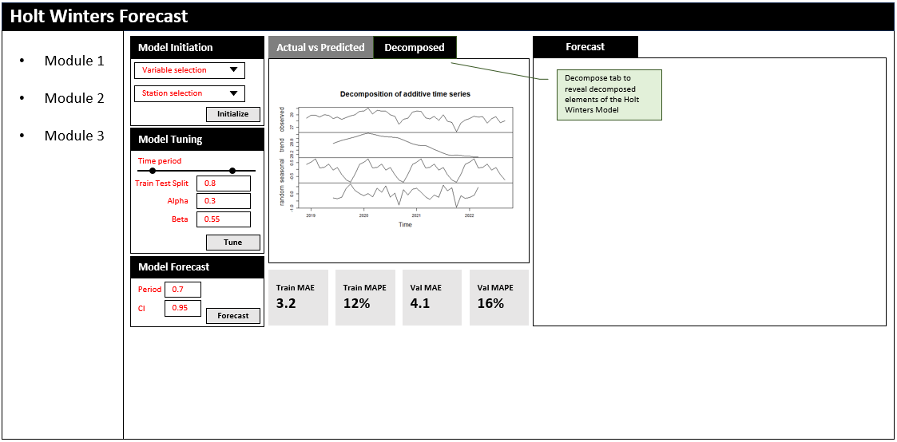
6.2.3 Metrics
At the bottom of the screen, the training and validation MAPE and MAE will be shown in 4 separate boxes.
6.3 Model Forecast
Once the user is satisfied with the tuning, he or she can fill in the desired forecast periods and confidence interval in the Model Forecast panel and click the “Forecast” button to generate the forecast results.
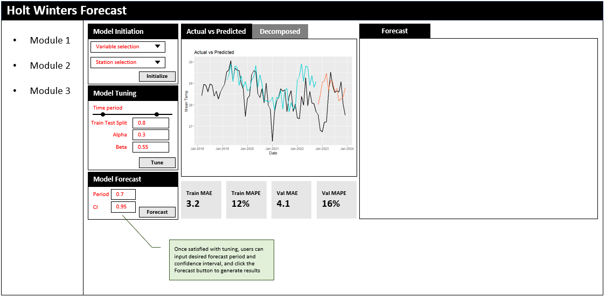
This will populate the Forecast panel on the right.
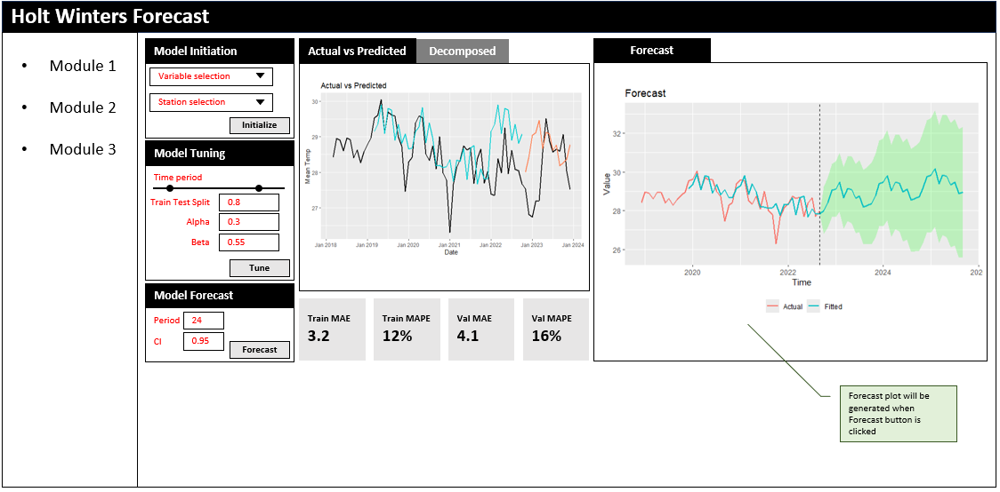
7. Conclusion
This exercise is meant as a prototype for our Shiny Application. To summarize:
Firstly, we have downloaded and explored our data sets to gain a better understanding of what we have. In the process, we found that there were many missing data that needs to be filled, and that using daily data was unsuitable for time series analysis due to the many 0s in rainfall. As such, the gaps were filled with non-zero averages of the same months, and the data was rolled up to monthly levels.
Next, we test the plots that we intend to display in our shiny application and found suitable ways to manipulate the model results for these plots. We also test interactivity for the plots, and decided on the appropriate interactive elements and tool-tips that was needed.
Finally, we draft the storyboard that highlights the users journey when using our shiny application. This helps us to picture the sequence of steps and actions that users have to take to generate the desired results.